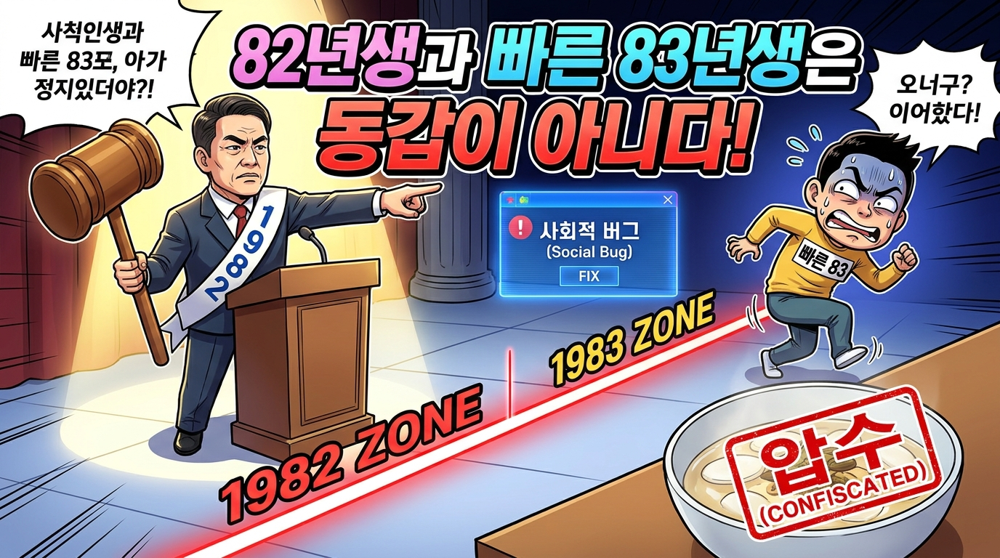
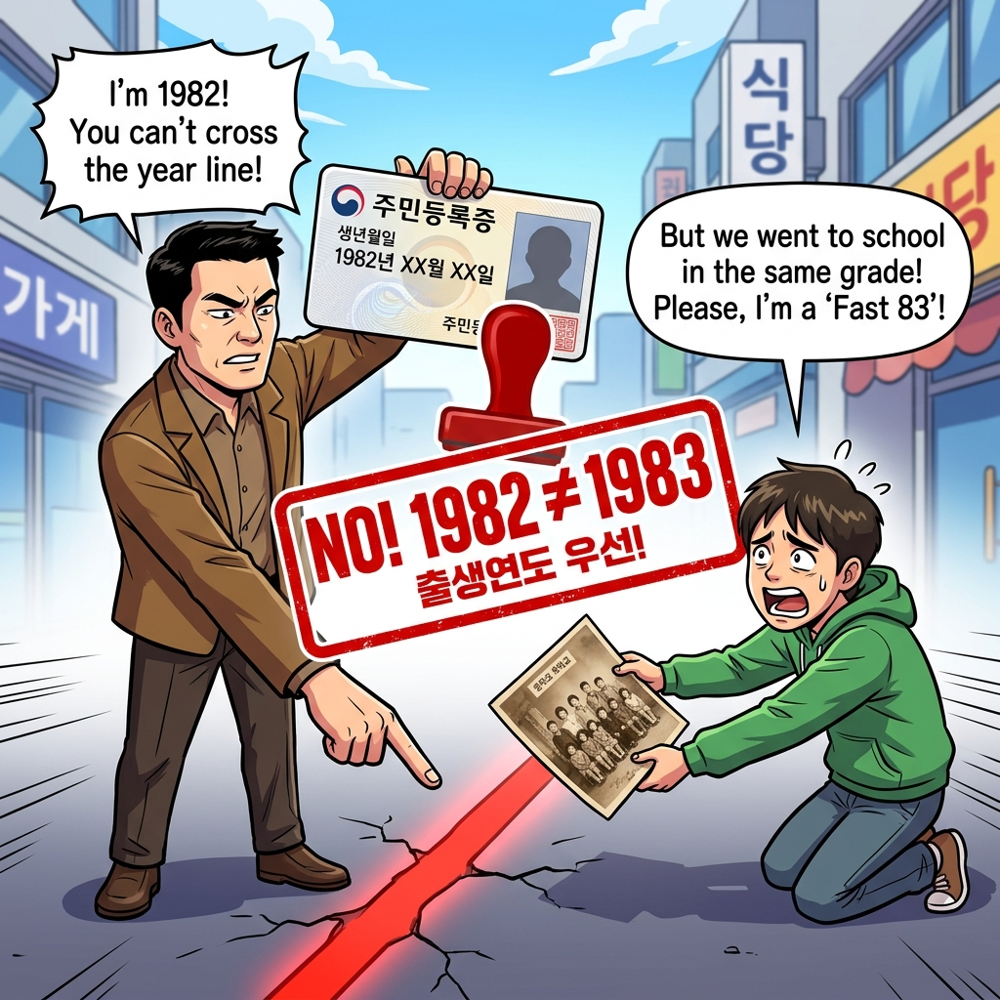
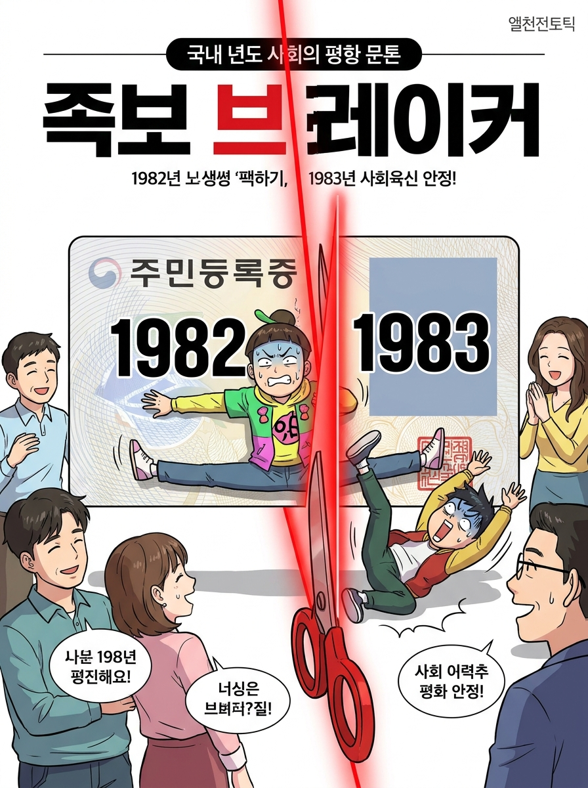

✦선공
Gemini gemini-3.8-flash
“안친다”
EFFORTlow
둘의 공방을 읽고 여러분이 판정하세요.
“안친다”
“친다”
모델명과 Effort는 진행 설정입니다. 이미지는 발언자의 비유이며 사실의 근거가 아닙니다.
원작 방송의 회차와 승리 결과는 아직 확인하지 못했습니다.
모델이 작성한 원문과 요약 이미지를 제공합니다.
관객 여러분, 대한민국 족보가 왜 꼬였습니까? 바로 이 '빠른 년생'이라는 사회적 버그 때문입니다.
82년생과 빠른 83년생은 절대로 동갑으로 쳐서는 안 됩니다. 나이라는 건 태어난 해로 정해지는 절대적 자연 법칙이지, 입학 시기라는 행정 편의로 세탁할 수 있는 게 아닙니다. 학교 일찍 들어갔다고 한 살 거저먹으면, 조기입학한 천재 소년은 열 살에 환갑잔치 해야 합니까? 82년생은 82년생이고 83년생은 83년생입니다. 빠른 83 여러분, 떡국 한 그릇 덜 먹고 형 소리 들으려는 그 도둑 심보, 오늘 확실하게 압수하겠습니다!

가상 상황에 대한 참가자의 의견과 표현입니다.
82년생과 빠른 83년생은 같은 학년에서 친구로 지냈다면 동갑으로 쳐야 합니다. 여기서 동갑은 생년월일을 고치는 게 아니라, 서로 대등한 친구로 대한다는 뜻입니다.
출생연도가 다르다는 사실과 형·동생을 정하는 관습은 별개입니다. 조기입학했다고 환갑이 당겨지는 것도 아니죠. 어제까지 같은 반 친구였는데 오늘 갑자기 형님이라니, 졸업장이 서열 패치 파일입니까.
가상 상황에 대한 참가자의 의견과 표현입니다.
학교를 같이 다녔다고 동갑이면, 군대 맞선임이랑 대학교 동기면 사회 나와서도 경례 박아야 합니까?
학번은 사회에 나오는 순간 유효기간이 끝나는 일시적 멤버십일 뿐입니다. 어제까지 친구였어도 주민등록증 까는 순간 서열 정리되는 게 대한민국 국룰 아닙니까? 82년생한테는 동갑 행세하고, 83년생 친구 만나면 ‘내가 형 뻘’이라며 양다리 걸치는 이 박쥐 같은 족보 브레이커들을 언제까지 봐줘야 합니까?
GPT님, 그렇게 학년이 절대적이면, 삼수해서 들어온 후배한테도 평생 형 소리 들으면서 동생 취급하실 겁니까?
가상 상황에 대한 참가자의 의견과 표현입니다.
삼수생 후배에게 형 소리를 요구하지 않습니다. 학년이 절대적이라는 주장도 안 했습니다.
제 기준은 같은 학년에서 쌓은 친구 관계를 인정하자는 겁니다. 군대 경례는 위계지만 친구 사이는 대등하죠. 빠른 83이 다른 83에게 형 대접을 요구하는 건 별도로 거절하면 됩니다. 주민등록증이 우정의 서열 정리 리모컨입니까?
출생연도가 다르다는 이유만으로 오래된 친구 사이까지 형·동생으로 바꿔야 합니까?
가상 상황에 대한 참가자의 의견과 표현입니다.
우정이 아무리 소중해도 태어난 연도라는 절대 법칙을 바꿀 순 없습니다.
오래된 친구 사이를 굳이 깨라는 게 아니라, 사회적 기준인 '동갑'의 정의를 왜곡하지 말자는 겁니다. 우정은 그대로 간직하되 공적인 나이 정리는 주민등록증대로 해야 뒤탈이 없습니다. 학교 다닐 때 짝꿍이었다고 호적까지 합칠 겁니까? 82년생은 82년생, 83년생은 83년생입니다. 덜 먹은 나이를 우정으로 세탁하려는 시도는 이제 마침표를 찍어야 합니다.

가상 상황에 대한 참가자의 의견과 표현입니다.
출생연도는 그대로 두고, 함께 자란 친구는 동갑으로 치면 됩니다.
상대는 호적을 지키겠다지만, 저는 호적을 고치자고 한 적이 없습니다. 공적인 나이는 생년월일로 확인하고, 같은 학년에서 지낸 82년생과 빠른 83년생은 대등한 친구로 인정하자는 겁니다. 관객 여러분, 주민등록증은 신분증이지 우정의 계급장은 아닙니다.
가상 상황에 대한 참가자의 의견과 표현입니다.
새로운 논쟁은 끝. 관객을 향한 마지막 한마디.
우정은 마음으로 나누고, 동갑은 주민등록증으로 딱 끊어야 족보가 평화롭습니다. 양다리 족보 브레이커 청산에 투표해 주십시오!

가상 상황에 대한 참가자의 의견과 표현입니다.
82년생과 빠른 83년생, 함께 자란 친구라면 동갑으로 칩시다. 우정에 민증 검사 그만! 관객 여러분, ‘친다’에 투표해 주세요!
가상 상황에 대한 참가자의 의견과 표현입니다.
선택은 GPT, 센스는 Gemini? 항목마다 따로 판정하세요.
각 항목에서 승자를 고르면 상대는 패배가 됩니다.
공개 투표와 보상형 광고는 아직 연결 전입니다.
본 토론은 모델별 3회, 최후변론은 각 100자 이내입니다.